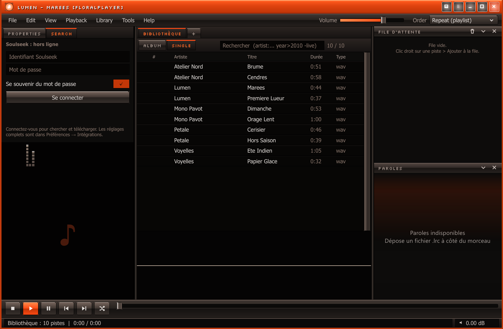

Windows 10/11 · version 2.7.0
FloralPlayer
Lecteur audio local pour Windows, écrit en Rust.
Bibliothèque, formats lossless, traitement audio, thèmes et plugins DLL. FloralPlayer lit les fichiers dans vos dossiers et garde ses réglages sur la machine : aucun compte, aucune synchronisation obligatoire.
Le bouton ouvre la dernière release publiée sur GitHub. L’installation ne demande pas de droits administrateur.
- Version
- 2.7.0
- Système
- Windows 10/11 · x64
- Données
- Sur votre disque

Un lecteur de bureau, pas une plateforme
FloralPlayer reprend les principes de foobar2000 : listes denses, colonnes configurables et réglages fins. L’interface est native, les fichiers restent dans leur arborescence.
Toutes les fonctionnalités →-
Bibliothèque et lecture
Colonnes configurables, recherche par champs, playlists, file d’attente, paroles synchronisées, reprise de session et glisser-déposer depuis l’Explorateur.
-
Formats
FLAC, MP3 (y compris VBR), WAV, OGG/Vorbis, AAC/M4A, images disque avec feuilles CUE et flux HTTP(S).
-
Audio
ReplayGain piste ou album, préampli, balance, limiteur de crêtes, crossfeed, downmix mono, gapless, crossfade et vitesse de 0,5× à 2×.
-
Intégrations
Discord Rich Presence, ListenBrainz, recherche et téléchargement Soulseek, télécommande LAN. Chaque intégration est optionnelle.
-
Plugins
Des DLL chargées au démarrage, une table d’entrée en C et des échanges JSON. Le SDK documente le cycle de vie et les limites réelles.
Étendre le lecteur
Documentation des plugins →Des plugins en Rust, une frontière en C
Les plugins sont des DLL chargées au démarrage. La macro declare_plugin!
produit la table d’entrée ember_plugin_v1 ; les données traversent la
frontière en JSON UTF-8. Aucun unsafe n’est nécessaire dans un plugin.
Le SDK décrit le cycle de vie, les événements de lecture, les actions, la persistance et les limites réelles de l’interface.
À lire avant d’installer une DLL
Une DLL s’exécute dans le processus du lecteur, sans bac à sable, sans signature et sans manifeste de permissions. Elle peut lire vos fichiers et vos réglages. N’installez que du code dont vous connaissez la source.
Télécharger FloralPlayer 2.7.0
Windows 10/11 64 bits · installation sans droits administrateur.